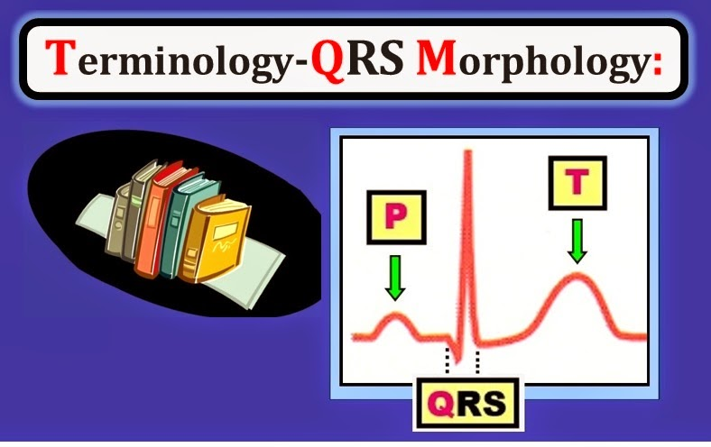
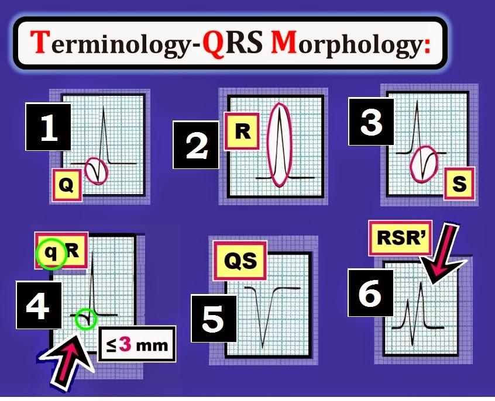
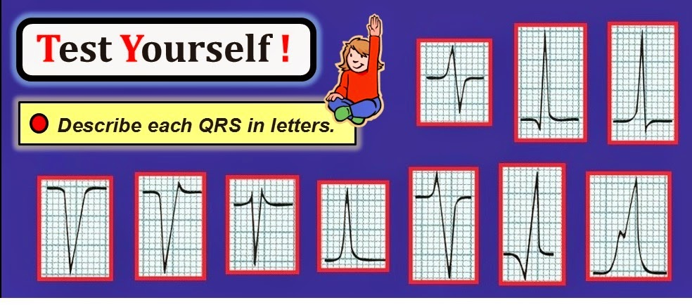
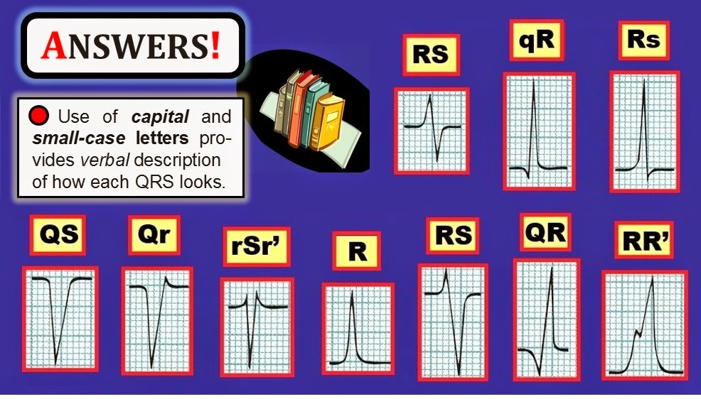
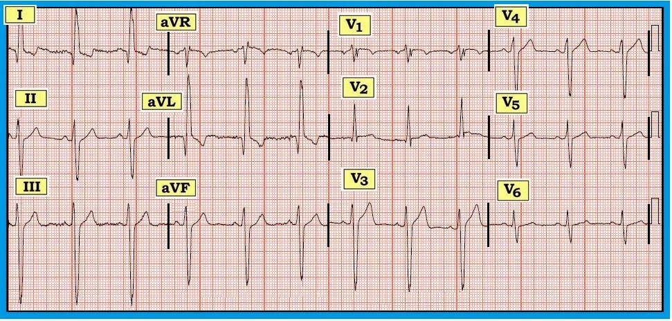

ECG Blog #88 (Cơ bản-1) – Thuật ngữ QRS

--------------------------------
Tôi đã bổ sung một phần mới vào ECG Blog của mình = định kỳ
đăng các Khái niệm điện tâm đồ cơ bản. Các bài này sẽ được trích (có chỉnh sửa)
từ cuốn sách nhập môn mới của tôi về đọc
điện tâm đồ = “A 1st Book on ECGs-2014” và phiên bản 1st-ECG-Book-ePub mở rộng (đã phát hành trên kindle-nook-kobo-ibooks). Thay vì các case cụ thể — mục tiêu của loạt Khái niệm điện tâm đồ cơ bản này là ôn tập ngắn gọn
một số chủ đề ít nâng cao hơn. Tôi hy vọng
phần mới này trong ECG Blog sẽ hữu ích với bạn!
=============================
LIÊN KẾT tới các bài Khái niệm cơ bản khác:
- Khái niệm cơ bản #1 (chính bài này! ) — Thuật ngữ QRS
- Khái niệm cơ bản #2 — Các khoảng (PR/QRS/QT )
- Khái niệm cơ bản #3 — Xác định trục
- Khái niệm cơ bản #4 — Các nhóm chuyển đạo
- Khái niệm cơ bản #5 — LVH
- Khái niệm cơ bản #6 — Cách tiếp cận hệ thống
- Khái niệm cơ bản #7 — Thay đổi Q-R-S-T
=============================


=============================
Thuật ngữ dùng để mô tả phức bộ QRS
Phần lớn công việc trong Bước Phân tích mô tả ban đầu khi đọc điện tâm đồ — là mô tả bằng lời những gì thấy trên bản ghi. Chỉ sau khi đã đánh giá điện tâm đồ một cách có hệ thống về Tần số – Nhịp – Các khoảng – Trục – Lớn các buồng tim – và Thay đổi Q-R-S-T — thì mới nên đưa ra diễn giải lâm sàng có kết hợp với bệnh sử.
Phần 1 này của loạt Điện tâm đồ cơ bản ôn lại Hệ thống danh pháp cho Hình thái QRS. Ưu điểm hiển nhiên của hệ thống thuật ngữ này — là cho phép chúng ta mô tả bằng lời hình dạng của hầu như bất kỳ phức bộ QRS nào cho những người không có bản ghi trước mặt. Các quy tắc rất đơn giản. Chúng được minh hoạ trong Hình 1:
- Ô 1 (trong Hình 1) — Sóng đi xuống đầu tiên của phức bộ QRS được gọi là sóng Q.
- Ô 2 — Sóng đi lên đầu tiên của phức bộ QRS được gọi là sóng R.
- Ô 3 — Sóng đi xuống theo sau sóng R được gọi là sóng S (miễn là nó đi xuống dưới đường đẳng điện).
LƯU Ý: Không phải phức bộ QRS nào cũng nhất thiết có đủ cả 3 thành phần (tức là sóng Q, sóng R và sóng S). Đôi khi — chỉ có một thành phần duy nhất (chẳng hạn một sóng R dương, ngoài ra không có gì khác).
- Chỉ có một thành phần duy nhất (sóng R) ở Ô 2 của Hình 1.
- Ngược lại — các phức bộ ở Ô 1 và 3 có 2 thành phần. Trong trường hợp này — chúng ta lần lượt gọi các phức bộ 2 thành phần này là “phức bộ QR” (Ô 1) và “phức bộ RS” (Ô 3).


=============================
Tiếp tục với 3 quy tắc cuối cùng của Hệ thống danh pháp cho Hình thái QRS (như trình bày trong Hình 1):
- Ô 4 (trong Hình 1) — minh hoạ rằng các sóng nhỏ hơn (không vượt quá 3 ô nhỏ = 3mm) được ký hiệu bằng chữ thường. Ngược lại — các sóng lớn hơn, sâu hơn 3 ô nhỏ (và trông cũng rộng hơn) được ký hiệu bằng chữ hoa (như thấy ở sóng Q của phức bộ QR trong Ô 1).
- Ô 5 — Khi chỉ có một sóng âm — hình dạng đó được gọi là phức bộ QS. Lý do là khi không có bất kỳ sóng R nào — chúng ta không thể phân biệt đó là sóng Q, sóng S, hay một sự kết hợp của cả hai.
- Ô 6 — NẾU có sóng dương thứ 2 — sóng này được ký hiệu thêm dấu phẩy (R' hoặc r', tuỳ theo kích thước). Sóng dương thứ 3 được ký hiệu là R'' hoặc r''. Tương tự — sóng S thứ 2 (nếu có) là S' hoặc s'.
=============================
TỰ KIỂM TRA: Mô tả từng QRS bằng chữ cái
Với luyện tập, việc áp dụng các quy tắc danh pháp QRS trong Hình 1 sẽ trở nên dễ dàng và tự động. Hãy xem các ví dụ phức bộ QRS chưa ghi nhãn trong Hình 2 dưới đây:
- Hãy mô tả từng phức bộ trong 10 phức bộ QRS bằng chữ cái, dùng Hệ thống danh pháp từ Hình 1.


=============================
TRẢ LỜI cho Hình 2: Như đã nói — Hệ thống danh pháp dùng chữ hoa và chữ thường cho phép mô tả bằng lời hình dạng QRS cho những nhân viên y tế có thể không có điện tâm đồ thật trước mặt. LƯU Ý: Chúng tôi thường dùng Hệ thống danh pháp cho Hình thái QRS trong quá trình đọc (khi ghi lại các dấu hiệu) — và khi ghi kết quả đọc vào hồ sơ bệnh án.
- ĐÁP ÁN của chúng tôi cho Hình 2 được trình bày dưới đây trong Hình 3.


=============================
Chúng tôi nhấn mạnh các điểm sau về Hình 3:
- Sóng Q càng lớn và càng rộng (như dạng QR ở hàng dưới của Hình 3, so với dạng qR ở hàng trên) — thì càng có nhiều khả năng bệnh nhân đã từng bị nhồi máu cơ tim (cơn đau tim) vào một thời điểm nào đó trong tiền sử. Sau đó có thể dựa vào đánh giá thay đổi ST-T để biết nhồi máu là mới hay cũ.
- Dạng QS (hàng dưới trong Hình 3) — hay gặp nhất ở các chuyển đạo phía trước.
- Tuỳ vào các thông số khác (như độ rộng phức bộ QRS và hình dạng ST-T) — ý nghĩa lâm sàng của dạng QS này có thể tương tự ý nghĩa lâm sàng của sóng Q rộng (= có thể đã từng nhồi máu), nhất là khi phức bộ QS xuất hiện ở nhiều chuyển đạo. Mặt khác — một hoặc nhiều phức bộ QS là bình thường (và được dự đoán) khi bệnh nhân có QRS giãn rộng do LBBB (blốc nhánh trái – Left Bundle Branch Block).
- Dạng rSr’ (tương tự dạng ở hàng dưới trong Hình 3) — thường gặp kèm với RBBB hoàn toàn hoặc không hoàn toàn (blốc nhánh phải – Right Bundle Branch Block).
=============================
Áp dụng hệ thống:
Để minh hoạ cách chúng tôi áp dụng Hệ thống danh pháp QRS — Chúng tôi đưa ra điện tâm đồ trong Hình 4, ghi ở một nam giới 22 tuổi bị loạn dưỡng cơ Duchenne. Tổn thương tim (thường nặng) — là quy luật ở hầu hết các bệnh loạn dưỡng cơ, đặc biệt là thể Duchenne. Thường gặp các bất thường điện tâm đồ sau trong bệnh cơ tim Duchenne: i) QRS giãn rộng do rối loạn dẫn truyền (thường là IVCD không đặc hiệu); ii) sóng Q bất thường không do nhồi máu (đặc biệt ở các chuyển đạo bên); và iii) phức bộ rSr’s’ nhiều pha ở chuyển đạo V1 — thường kèm sóng R ở các chuyển đạo trước tim phía trước cao đến bất ngờ. Tất cả các đặc điểm này đều thấy trong Hình 4:
- Có phức bộ QR ở các chuyển đạo bên cao I và aVL. Mặc dù trong hoàn cảnh bình thường các sóng Q lớn này gợi ý nhồi máu thành bên cũ — ở nam giới 22 tuổi bất hạnh bị bệnh cơ tim Duchenne này, chúng là sóng Q không do nhồi máu.
- Lưu ý dạng qRs ở chuyển đạo V2. Sóng Q như thế này bình thường không hay thấy ở chuyển đạo V2, nhất là khi đã có sóng r khởi đầu ở chuyển đạo V1. Tuy nhiên, ở bệnh nhân bệnh cơ tim Duchenne — đây nhiều khả năng cũng là sóng q không do nhồi máu.
- Thấy phức bộ rSr’s’ nhiều pha ở chuyển đạo V1. Dù điển hình ở bệnh nhân bệnh cơ tim Duchenne — ở các trường hợp khác, dạng này sẽ rất bất thường.
- Hầu hết các chuyển đạo còn lại trên bản ghi ở Hình 4 có phức bộ RS. Việc ký hiệu bằng chữ R hoa và S hoa là hợp lý do kích thước tương đối (>3mm) và độ rộng của các sóng dương và âm này.


=============================
Để biết thêm thông tin — XEM —
Nội dung và 3 hình đầu tiên trong ECG Blog #88 này được lấy từ cuốn sách nhập môn mới của chúng tôi, “A 1st Book on ECGs-2014”.
- Thông tin có tại: www.ecg1stbook.com -

--
- Phiên bản ePub mở rộng của cuốn sách này đã phát hành trên Kindle-Kobo-Nook! (- phiên bản iBooks sắp ra mắt!). Vì không bị giới hạn dung lượng như sách in — phần giải thích được bổ sung và các bàn luận sâu hơn trong phiên bản ePub.
--------------------------------
Mời bạn tải miễn phí bản mở rộng GLOSSARY (bảng thuật ngữ) gồm các thuật ngữ liên quan đến ECG của chúng tôi.

- -
--------------------------------
- LƯU Ý: Hình 4 lấy từ ECG Blog #45 của chúng tôi -